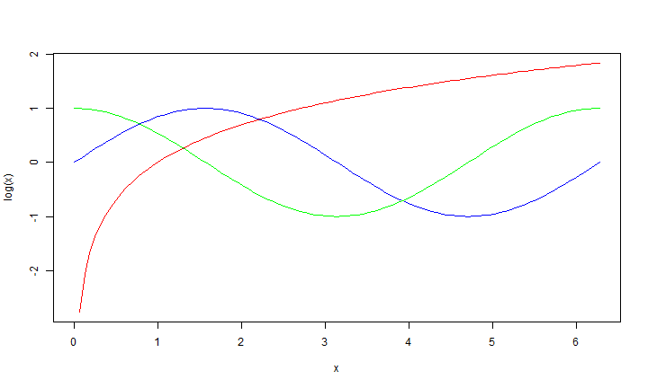

This presentation to describe the functionand uses of the Shiny application I developed as course project at the following link:
Developing Data Products Course Project
smhamam
Introduction
Fuctionality
The application allows the user to approximate using polynomial terms one of the follwing functions:
- Sine
- Cosine
- Logarithm
Functions
curve(log(x), 0, 2*pi, col="red")
curve(sin(x), add = TRUE, col = "blue")
curve(cos(x), add = TRUE, col = "green")

Fitting

Over Fitting
When too many plynomial terms are used, the polynomial overfits the data resulting in a poor aproximation.